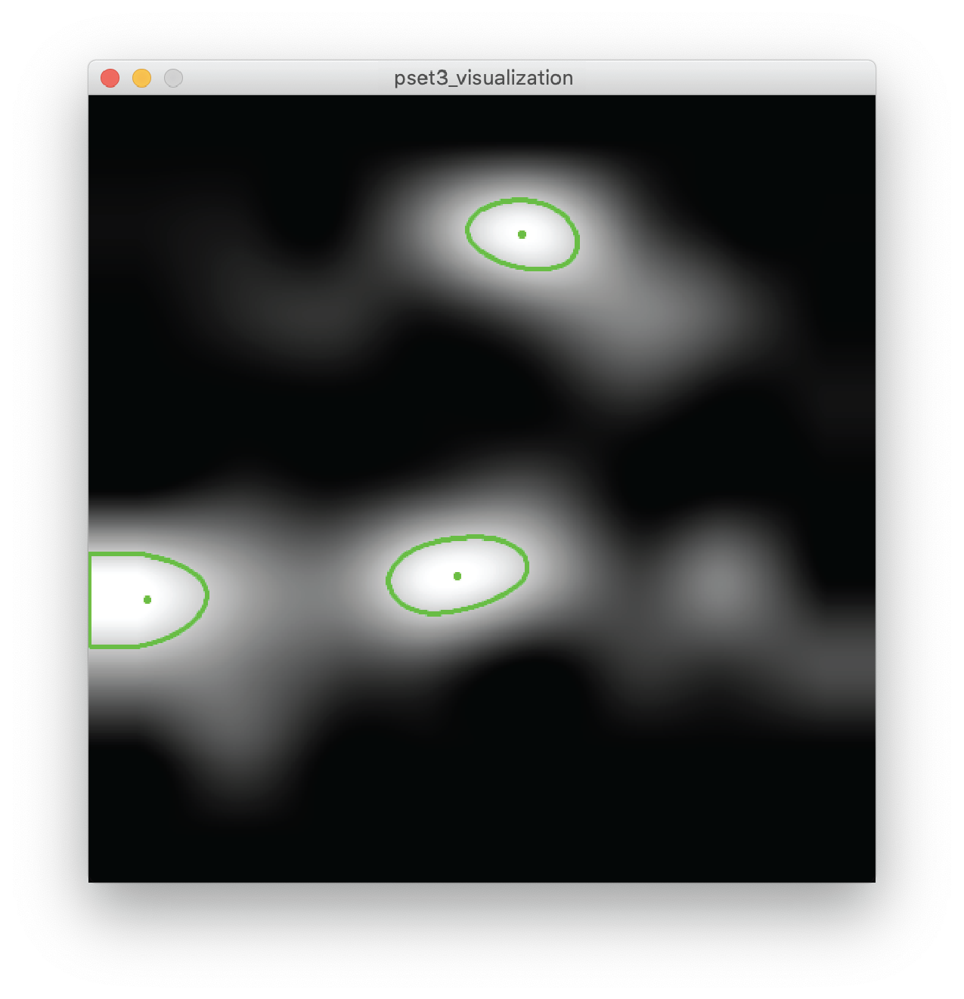
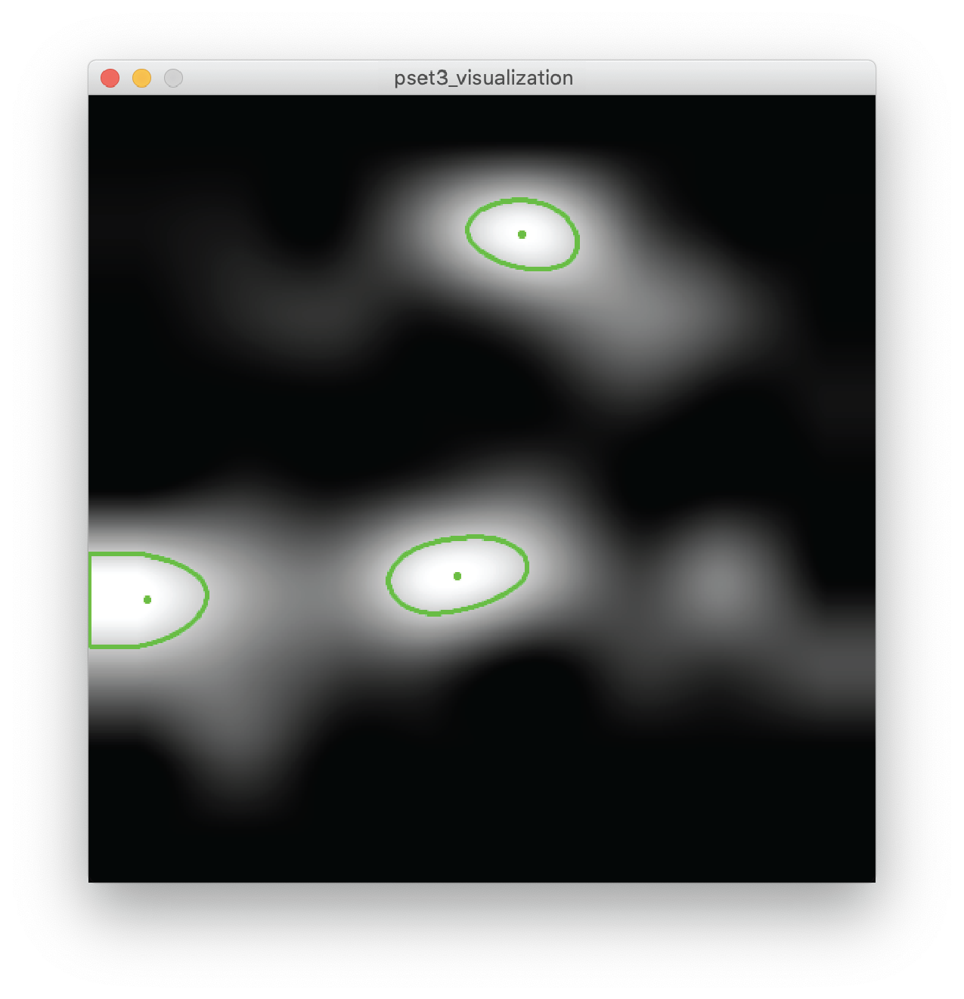
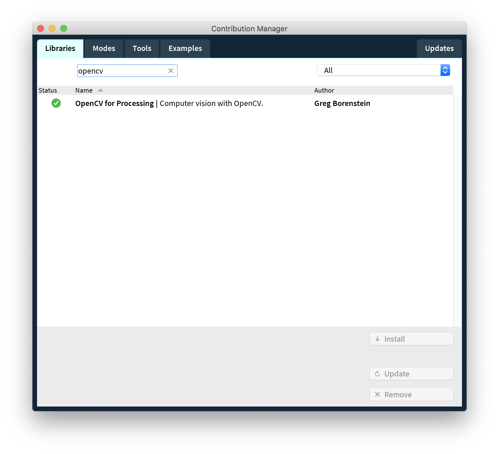
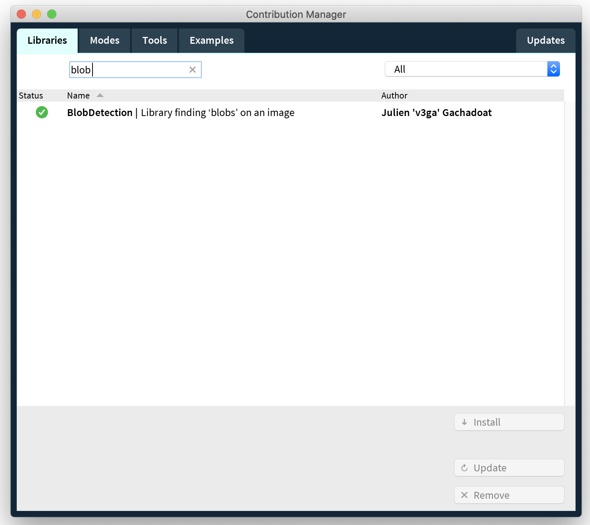
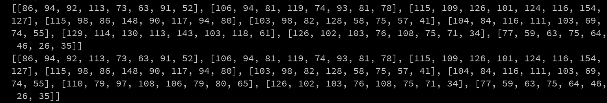
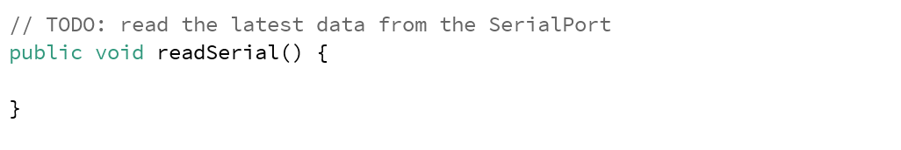

6.810 Engineering Interactive Technologies (fall 2020)
Problem Set Series: Multi-Touch Pad
 

Problem Set 3 (due Friday, Oct. 23, 2020, 11.59pm)
Now that you have the hardware ready and Arduino sensing code prepared, you will write some code for the visualization part of your multi-touch pad. In particular, you are going to do the following four steps:
- (1) Read the multi-touch sensing data (generated by you PSet2 Arduino code) from serial port and save them properly.
- (2) Set the noise baseline.
- (3) Set the background image color update and perform bicubic interpolation.
- (4) Implement blob detection.
Skeleton Code
Start by downloading the skeleton code for the PSet3 from here.
Install external libraries
For this PSet, we will be using two processing libraries: 1) OpenCV, and 2) BlobDetection.
You can install them directlt in the Processing software's Sketch/Import Library/Add Library:


(1) Read the multi-touch sensing data
Now that you are all familiar with reading data from serial port in Prosessing (recall Lab 1 & 2).
We will be implementing something really similar in the first part of the PSet3.
Remember from PSet2, we are sending the multi-touch pad sensing data in this format: columm0, row0val, row1val, row2val...
For example, the data looks like this in the serial port:
0,50,83,58,79,108,75,82,54
1,55,92,120,84,63,61,88,53
2,61,64,73,66,92,78,67,57
3,65,117,116,84,48,81,91,71
4,65,128,116,54,76,81,88,59
5,61,86,66,54,114,78,64,64
6,59,86,120,83,85,75,93,63
7,56,86,116,70,72,83,80,64
8,23,82,74,68,98,64,62,52
...
Now we will be reading the sensing data from the Processing, and save them into a 2D array.
The size of 2D array should be [number of transmitter lines (tx)] [number of receiver lines (rx)].
A sample sensing data 2D array printed out could be:

You should be implementing this in the readSerial() function in the skeleton code:

(2) Set the noise baseline
(3) Set the background image color and bicubic interpolation
(4) Implement blob detection
Grading
We will give 25 pts in total:
- 5 pts: you finished all for steps of the task.
- 5 pts: circuit design: are all measurements correct, i.e. do the diamonds have the right size, is the spacing correct, do the wires actually connect to the FCP correctly.
- 5 pts: inkjet printing: the print is highly conductive and all columns and rows have a low resistance.
- 5 pts: assembly: did you assemble the layers correctly, are they correctly aligned, are the sheets stacked in the correct way.
- 5 pts: connect to FCP: your multi-touch pad connects correctly to the FCP chips, nothing is misaligned.